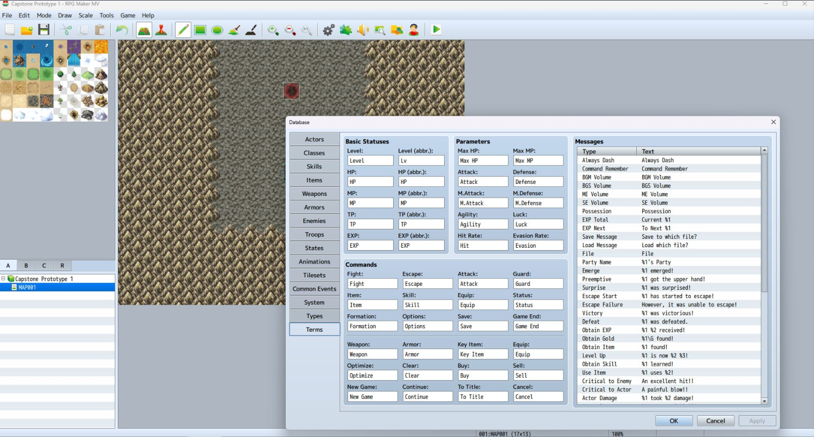
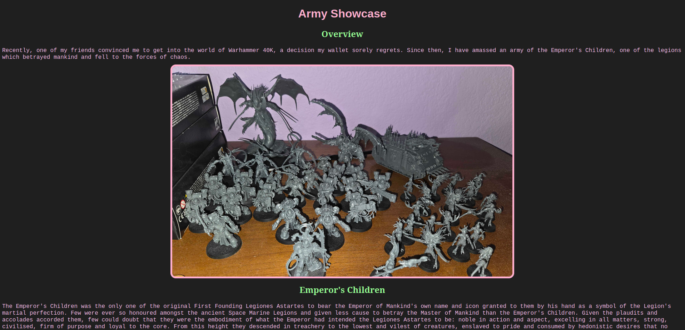
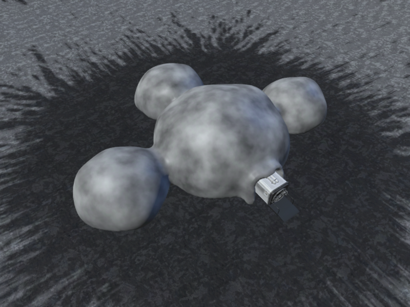

My name is Jade Pendleton, I am a computer science student at Texas Tech University. I was born and raised in Lubbock, Texas, and have been fascinated with technology from a very young age. I've honed my computer science skills my entire life, and aspire to have a full time job in Information Technology. I am primarily a computer scientist, not an aesthetician, decorating things has never been my strong suit. So instead of caving and "vibe-coding" a stylesheet, I descided to theme the website around a minimalist terminal-like aesthetic, to showcase my priorities when it comes to creating software, which is getting lines of code working and letting someone more artsy worry about making it look pretty.

Web-Based RPG hosted on GitHub pages
This is my senior capstone project for my Bachelors in Computing Applications at Texas Tech University. The project is a browser game inspired by classic JRPGs such as Final Fantasy and Dragon Quest. It was developed from scratch in using HTML, CSS, and JavaScript in RPGMaker MV. The game is hosted on GitHub pages, and the source code is available on my GitHub profile.

A personal portfolio website on a hobby of mine.
This is the personal portfolio website I created to showcase my hobby of Warhammer 40k. The site is hosted on GitHub pages, and the source code is available on my GitHub profile.

A virtual reality development project for the NASA HUNCH program.
This is a virtual reality development project I created for the NASA HUNCH program. The project is a VR simulation of a lunar habitat, designed to showcase the potential for sustainable living on the moon. The project was developed using Unity and C#, and was designed to be experienced using a VR headset.